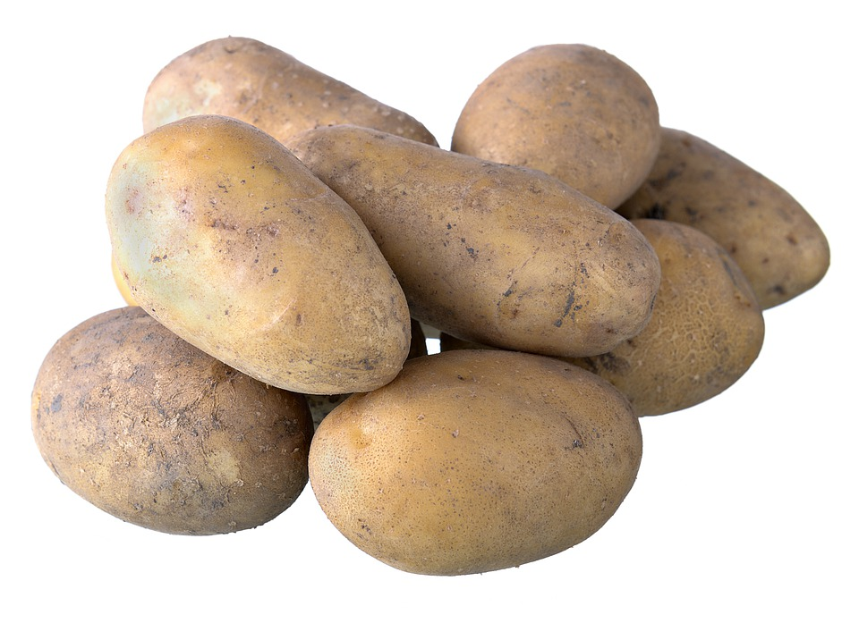
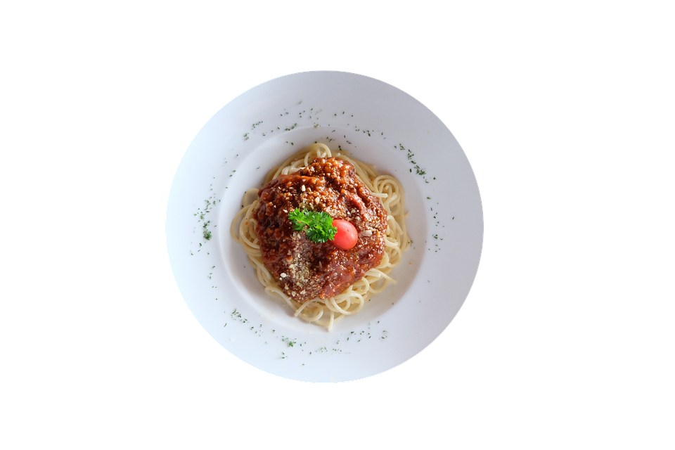
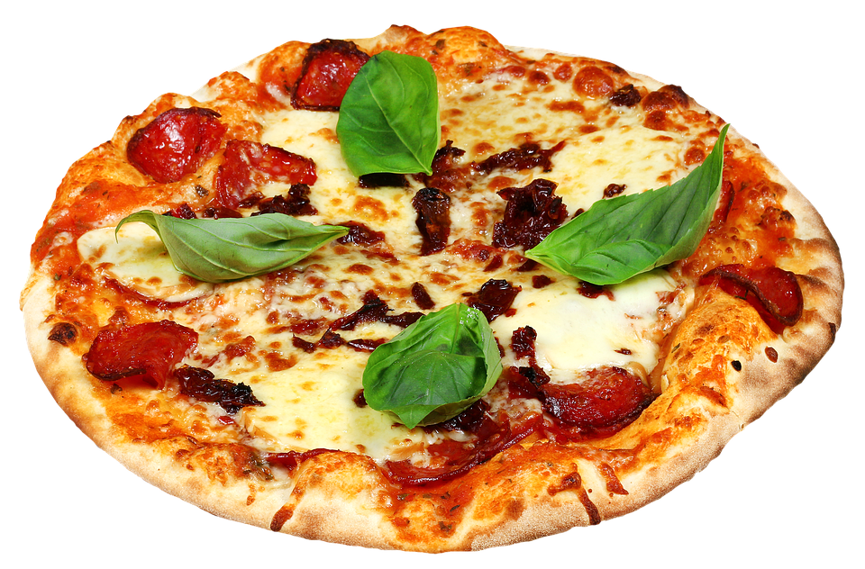
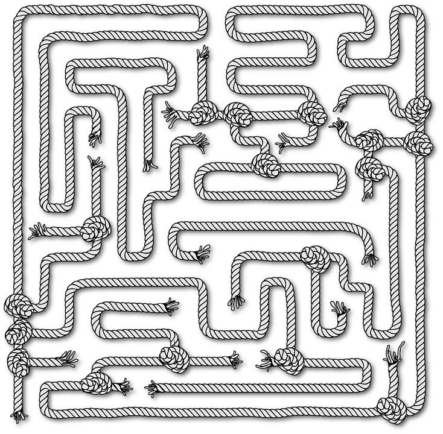
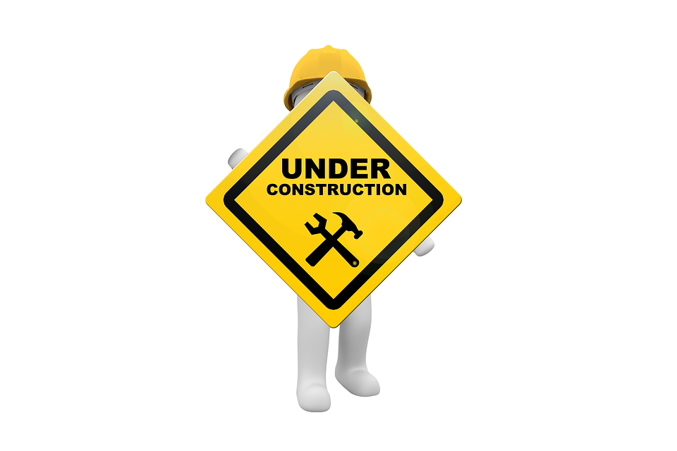

Niewielka księga
PRZEPISÓW

Oto książka z moimi przepisami
Aktualnie znajdziesz w niej przepisy na:- Pyry z gzikiem
- Makaron z sosem bolognese
- Pizzę neapolitańską
Pyry z gzikiem
Składniki:
- Ziemniaki 350g
- Śmietana 18%
- Twaróg tłusty 400g
- Rzodkiewka 2 szt.
- Szczypiorek 1szt
- Sól/Pieprz do smaku
Opis:
- Ziemniaki dokładnie myjemy, gdyż gotować je będziemy w mundurkach
- Wkładamy do garnka z osoloną wodą, gotujemy do miękkości (średnie ziemniaki ok.15min)
- W tym czasie robimy gzik:
- Rzodkiewkę kroimy w kostkę, szczypiorek na małe kawałki w poprzeg
- Wkładamy je do miski razem ze śmietaną i twarogiem
- Całość ugniatamy widelcem do uzyskania możliwie gładkiej masy
- Po ugotowaniu ziemiaków te wykładamy razem z gzikiem, delektujemy się smakiem
Makaron z sosem bolognese
Składniki:
- Makaron o dowolnym kształcie 120g
- Mielona wieprzowina 500g
- Marchewka ok. 3 średnie sztuki
- Seler 0.5szt
- Pomidory w puszcze 1szt
- Cebula 1szt
- Czosek
- Liść laurowy 2szt
- Ziele angielskie 3szt
- Korzeń pietruszki 1szt
- Oliwa z oliwek
Opis:
- Wszystkie warzywa kroimy na drobne kosteczki kawałki
- Rozgrzewamy w garnku niedużą ilość oliwy, na niewielkim ogniu smażymy warzywa
- Po około 5-ciu minutach wrzucamy mięso i smażymy do odparowania jego soków
- Dodajemy pomidory z puszki, liść laurowy, ziele angielskie
- Dolewamy nieco wody (należy uważać żeby nie dolać za dużo!), całość gotujemy ok 30min
- Gdy sos się zagęści gotujemy makaron wedłyg instrukcji na opakowaniu
- Gotowy makaron mieszamy z sosem, jemy z apetytem
Pizza Neapolitańska
Składniki:
- Mąka Tipo 00 500g
- Szczypta drożdży (ok.2g)
- Woda 330ml
- Sól 20g
- Kasza manna
- Ulubione składniki
Opis:
- Wodę nieco podrzewamy, tak aby była ciepła lecz nie gorąca (tak aby nie zabić drozdży)
- Dokładnie rozpuszamy w niej sól
- Dosypujemy drożdże aktywnie mieszając
- Na stolnicy rozsypujemy mąkę, robiąc z niej kopiec
- Powoli dolewając wodę ugniatamy ciasto do momentu aż przestanie się kleić do dłoni (powinno być jednak miękkie)
- Ugniecione ciasto odkładamy do wyrośnięcia na co najmniej godzinę
- Po wyrośnięciu rozciągamy rękoma (nie rozwałkowujemy!!!)
- Deskę posypujemy kaszą manną, kładziemy ciasto i układamy ulubione składniki, w tym czasie nagrzewając piekarnik do maksymalnej temperatury
- Pizzę zrzucamy z deski do piekarnika, pieczemy do momentu zarumienienia brzegów
- Cieszymy się że zrobiliśmy pyszną pizzę
 ZAGADKA
